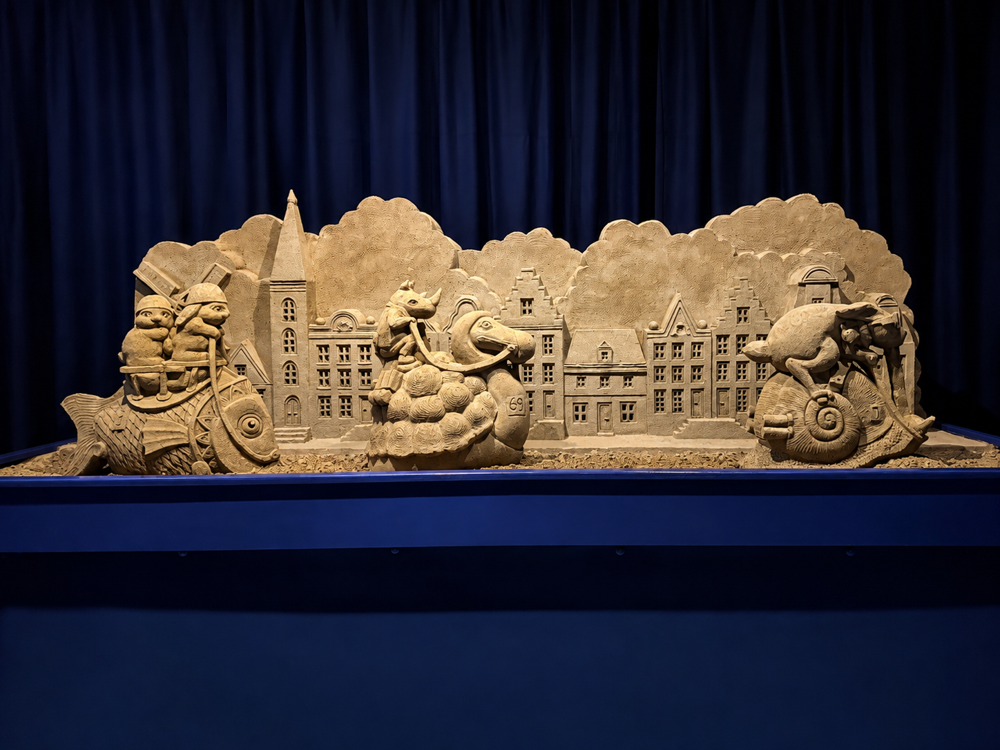
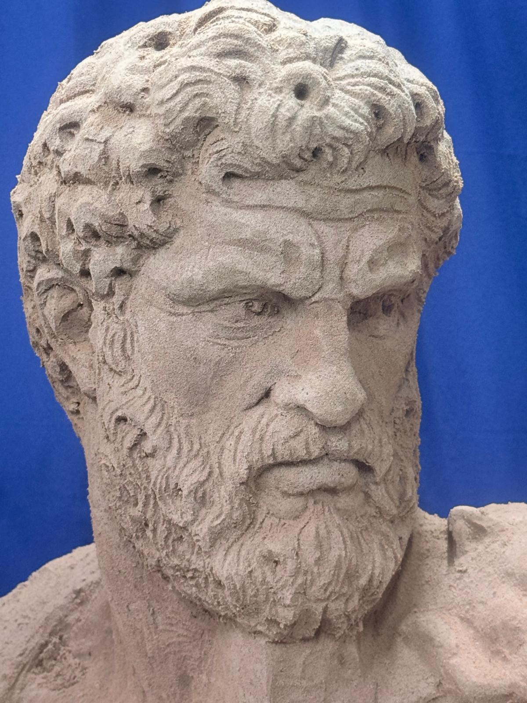
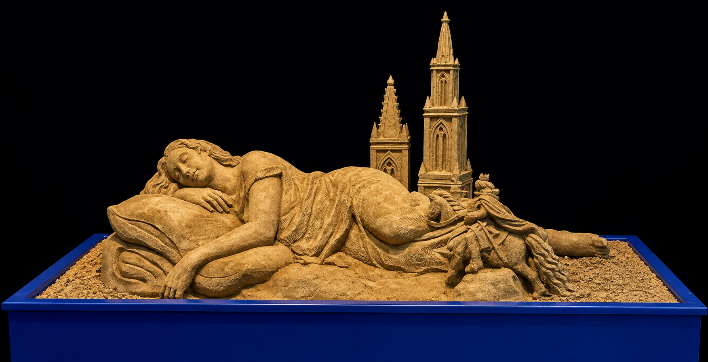
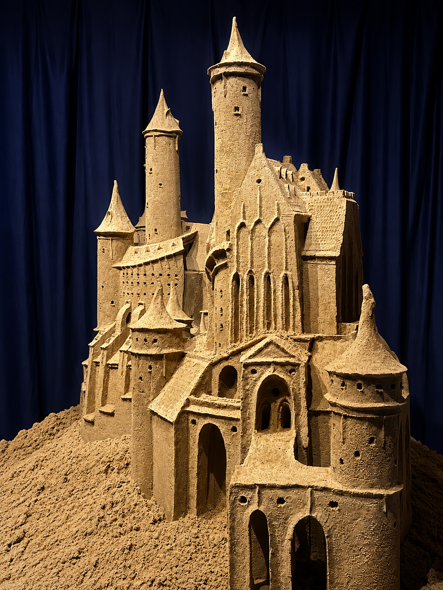
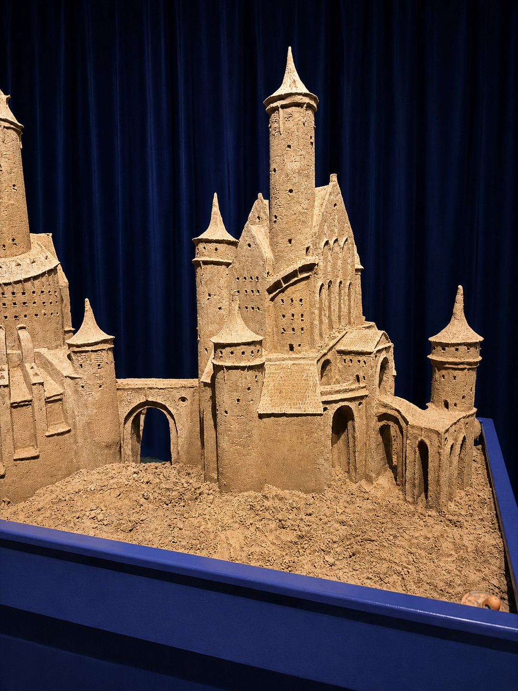

Bijzonder om te zien
Bekijk de sculpturen van dichtbij en ontdek de kleine details die je vanaf een afstand gemakkelijk mist.
Stap binnen in een wereld vol bijzondere figuren, verhalen en details. Iedere sculptuur is met de hand opgebouwd en laat zien hoeveel karakter er in zand kan zitten.
Bekijk de sculpturen van dichtbij en ontdek de kleine details die je vanaf een afstand gemakkelijk mist.
Een laagdrempelige tentoonstelling die leuk is voor gezinnen, toeristen, kunstliefhebbers en nieuwsgierige bezoekers.
Van een massa zand ontstaat stap voor stap een herkenbaar en expressief beeld.




